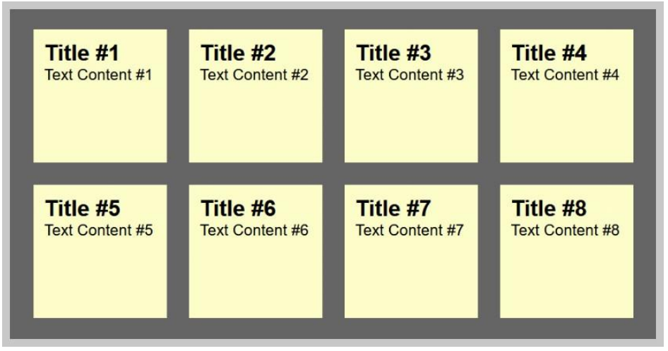

Create a Sticky Note Effect in 5
Easy Steps With CSS3 and HTML5
by Chris Heilman 27 Jan 2021
Difficulty:IntermediateLength
:Medium Languages:

In this tutorial, you'll learn how to transform an HTML list into a wall of "sticky
notes" that look and work like the following:
The effect is built up gradually and works on all up-to-date browsers like
Chrome, Safari, Firefox, and Opera. Older browsers simply get some yellow
squares.
Step 1: The HTML and Basic Squares
We will be using some common CSS properties that work across all
browsers. As we are using HTML5 for the effect, the basic HTML of our
sticky notes is an unordered list with a link containing all the other
Step 2: Drop Shadows and Scribbly Font
Now it's time to add a drop shadow to the notes to make them stand out and
to use a scribbly, hand-written font as the note font. For this we use Google Fonts
and the fonts they provide us with, called "Reenie Beanie" and "Lato".
Step 3: Tilting the Notes
Both the tilting of the notes and the zooming we'll add in the next step were
already explained in the past, in this article by zurb So big thanks to them
for publishing this trick.
In order to tilt an element, you use the
transform:rotate property of CSS3,
again addiing the prefix for each of the browsers:
Apple never showed intentions of racing the Nexus 7 to the bottom in the tablet game, and the
iPhone 5c is proof that it won't do that in the phone arena, either.
Infographic by Troy Dunham for Engadget
Kebudayaan Indonesia yang multikultur seperti itu, ketika dikaji dari sisi dimensi waktu, dapat
dibagi pula pengertiannya :
Pertama, kebudayaan (Indonesia) adalah kebudayaan yang sudah terbentuk.
Kedua, kebudayaan (Indonesia) adalah kebudayaan yang sedang membentuk.
Ketiga, adalah kebudayaan (Indonesia) adalah kebudayaan yang direncanakan untuk
dibentuk